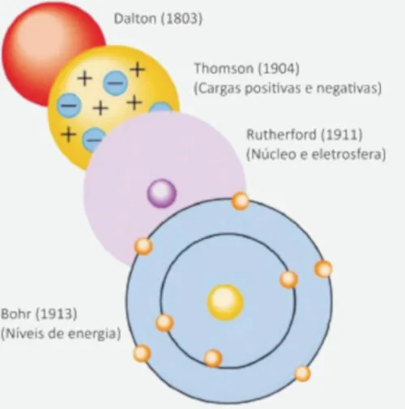

(Fuvest/2025) A figura a seguir apresenta a evolução dos modelos atômicos, desde o primeiro, proposto por Dalton em 1803, até o de Bohr, proposto em 1913.

Sobre os quatro modelos atômicos apresentados, é correto afirmar:
A) Todos os modelos previram a presença de cargas positivas no núcleo atômico.
B) O modelo proposto por Thomson, por prever a existência de nêutrons, não poderia explicar a radiação alfa (α).
C) Diferentemente do modelo de Dalton, o modelo de Rutherford não explica a estrutura de cátions e ânions.
D) Apenas o modelo de Bohr, com o advento de balanças de precisão, considerou a diferença de massa entre os elementos.
E) Elementos radioativos não poderiam ser explicados pelo modelo proposto por Dalton.